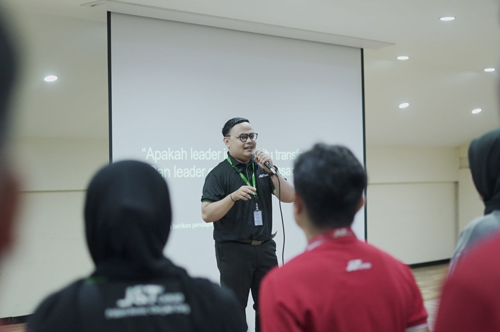
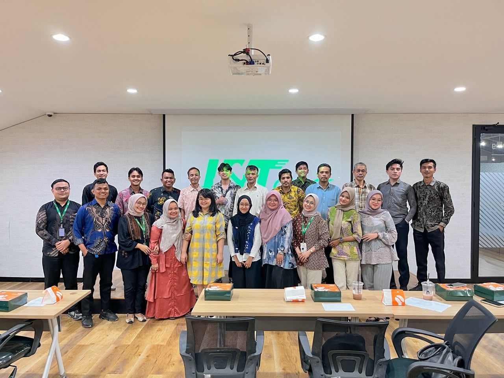
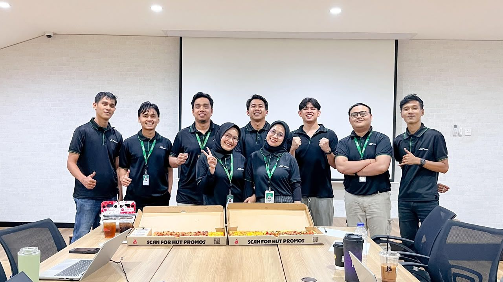
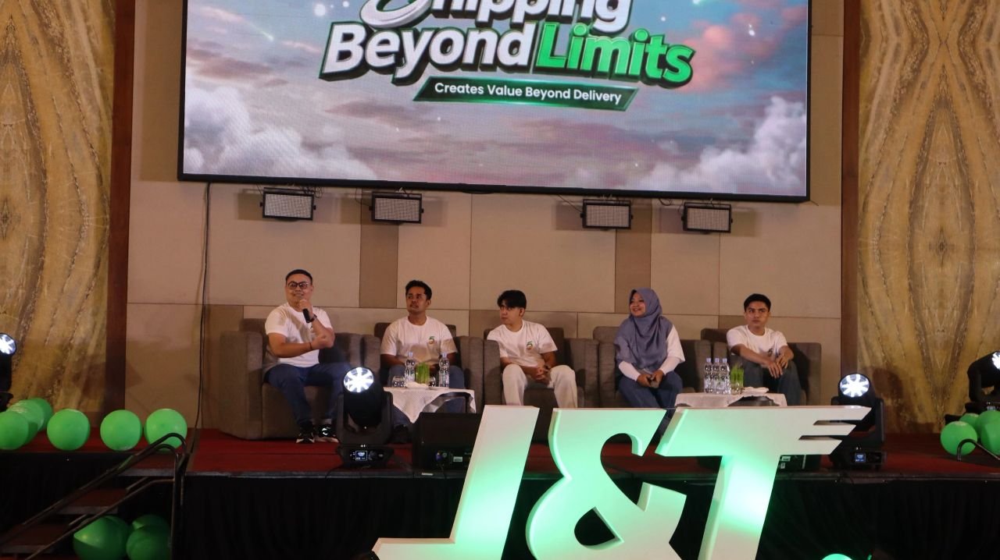

Hi, I’m Revaldi. I’m building a career in Human Resources, bringing experience from training and operational support. I care about what helps people do good work: clear expectations, useful learning, and processes they can rely on.
People & processTraining & developmentGrowing across HR
CurrentlyGrowing through people practices
Based inPadang, Indonesia
GOOD WORK IN PROGRESS
PERSONAL PORTFOLIO · 2026
Curiosity firstMake it clearBuild with peopleKeep getting better
A little about me
People matter. Good systems do too.
I’ve worked on both sides of day-to-day operations: helping teams understand expectations through training, and keeping the information and coordination behind the work in order. It has shown me how much people rely on clear communication and processes they can trust.
That is what draws me to HR. I want to be part of people’s career journeys and help bridge what employees need with what an organization is working toward. My background is in training and operations, and I’m ready to keep learning as I grow across HR—whether in recruitment, learning and development, or broader generalist work.
What I want to build
People supported by clear processes.
I’d like to help create a workplace where people know what’s expected, can get the support they need, and have room to grow. To me, that often starts with simple things done well: clear communication, useful training, accurate information, and follow-through.
Training and communication people can use in their work
Recruitment and employee processes handled with care
Accurate people data employees and managers can rely on
Day-to-day coordination that makes work easier for people and teams
Selected work
Selected work
Selected work that reflects my experience in training, people-related reporting, and day-to-day operations.
SOP REFRESHERSWEEKLY
55OUTLETS
55ADMINS
Online · weeklyIn person · Padang
01 / TrainingLearning & development
SOP Training for 55 Outlets
Alongside handling SOP reports for 55 outlets, I led weekly online refreshers for outlet admins on SOPs, package handling, and the latest requirements from HQ. I prepared and delivered each session, answered questions, and checked the following week’s cases to see whether errors had repeated or new ones had emerged. Those findings shaped the next training, helping me turn operational issues into focused learning. I also helped coordinate in-person training in Padang.
Overload funds & AWBsData follow-upFinance reporting to HQ
Information gathered, checked, and shared
02 / People dataPerformance reporting
People & Performance Reporting
Each week, I prepared KPI reports using Excel and shared spreadsheets so HQ could assess Regional Manager and area PIC performance and review area results. I entered attendance and salary data for DSO employees and gateway daily workers in Feishu, supporting HQ’s view of manpower effectiveness. When an RM’s overload-fund report was late and Finance needed the AWB details, I pulled the records myself and quickly recapped the AWB count to help keep reporting to HQ on schedule.
KPI reporting
Attendance & salary
Manpower data
PARTNER FILESAREA OPS
New & renewed contracts50+
Outlet opening requests20+
Blind Van records53
AREA REPORTING↗
03 / CoordinationOperations
Partner & Area Operations
I prepared more than 50 new and renewal partner contracts from submitted documents, and tracked over 20 outlet-opening OAs through completion with HQ. I also recorded daily use of 53 Blind Vans across West Sumatra, then compiled monthly usage days and charges for each outlet. Alongside reporting area-program data to HQ, the work meant regular coordination with HQ Legal and Fleet, Regional Managers, and area PICs.
Contract administration
Vendor coordination
Area reporting
People & work
Learning, facilitation & performance
From training sessions and team reviews to a talk show with J&T Cargo West Sumatra’s top management, these moments reflect how I bring people together, guide conversations, and share performance insights to help teams improve.

Cross-company trainingHost · 200+ attendees

Padang area owners meetingModerator · event prep & minutes

Network monthly meetingPerformance insights

5th anniversary talk showHost · West Sumatra leaders
Experience & direction
A career shaped by people, process, and performance.
Network Support Specialist
J&T Cargo · West Sumatra
I coordinate operational processes across field teams and HQ, keeping information clear and approvals moving. The role has strengthened my attention to detail, follow-through, and understanding of the practical systems people rely on at work.
Network Training Specialist
J&T Cargo · West Sumatra
I supported outlet teams through training and coaching on procedures and service expectations. The experience taught me to adapt my communication to different audiences and connect learning with the standards teams are expected to meet.
The toolkit
People skills & practical tools.
A toolkit shaped by hands-on experience in training, operations, and people-related reporting. I’m building on that foundation as I grow into a career in HR.
People & process
CommunicationTraining facilitationOn-site coachingPolicy & SOP communicationCross-team coordinationProblem solvingAttention to detail
Data & tools
KPI reportingAttendance & salary reportingOperational documentationMicrosoft ExcelFeishuPowerPointGPTGeminiClaudeCopilotDeepSeekGrokOther AI tools
Open to HR opportunities
Let’s help people do their best work.
I’m open to opportunities across HR, including recruitment, learning and development, HR administration, and generalist roles. My experience in training and operations has shown me how clear communication, dependable processes, and thoughtful support can make a difference in people’s day-to-day work. I’d love to bring that perspective to a people-focused team and keep learning along the way.